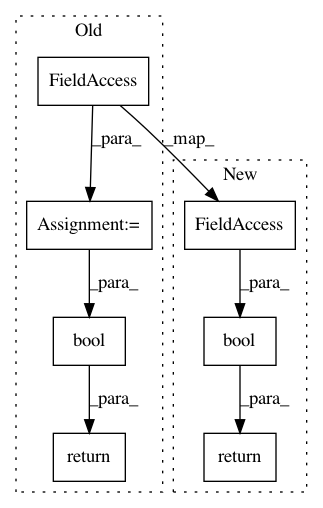

dfd15900c76de6c286a6a7555cd19ddc5f6f32eb,homeassistant/components/binary_sensor/insteon_plm.py,InsteonPLMBinarySensor,is_on,#InsteonPLMBinarySensor#,54
Before Change
@property
def is_on(self):
Return the boolean response if the node is on.
sensorstate = self._insteon_device_state.value
return bool(sensorstate)
After Change
@property
def is_on(self):
Return the boolean response if the node is on.
return bool(self._insteon_device_state.value)
In pattern: SUPERPATTERN
Frequency: 3
Non-data size: 7
Instances
Project Name: home-assistant/home-assistant
Commit Name: dfd15900c76de6c286a6a7555cd19ddc5f6f32eb
Time: 2018-03-29
Author: tharris@harrisnj.net
File Name: homeassistant/components/binary_sensor/insteon_plm.py
Class Name: InsteonPLMBinarySensor
Method Name: is_on
Project Name: home-assistant/home-assistant
Commit Name: 201c9fed773e0ad0a137ca67597af0685c85d1b1
Time: 2018-07-14
Author: tharris@harrisnj.net
File Name: homeassistant/components/switch/insteon_plm.py
Class Name: InsteonPLMSwitchDevice
Method Name: is_on
Project Name: home-assistant/home-assistant
Commit Name: f391cbae27ed6b7e23960acaa298fc58f63f7f85
Time: 2018-03-29
Author: tharris@harrisnj.net
File Name: homeassistant/components/binary_sensor/insteon_plm.py
Class Name: InsteonPLMBinarySensor
Method Name: is_on